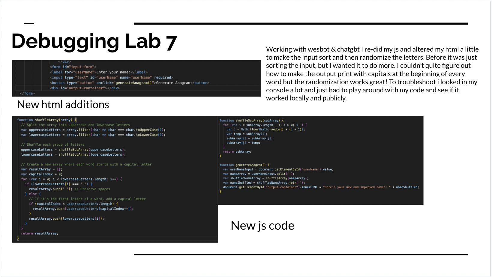
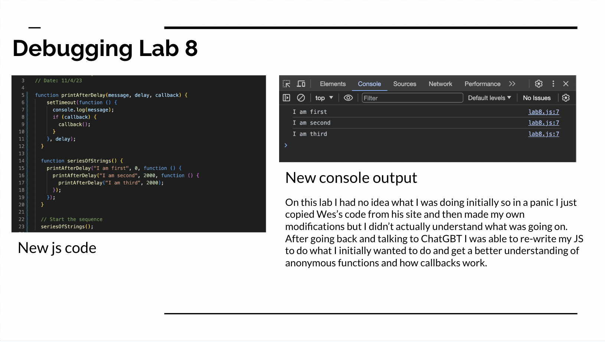

Lab 14 - Debugging
Challenge
de-bug and redo past labs that weren't quite right.
Problems
The main challenge I faced was remembering how to properly impliment images in html and centering them. After some troubleshooting I just made my own folder for the images in the same one as this lab, and I had to play around in CSS for a bit but I got my images to center by just giving them a unique ID so it wouldn't effect the other sections.
Debugging

